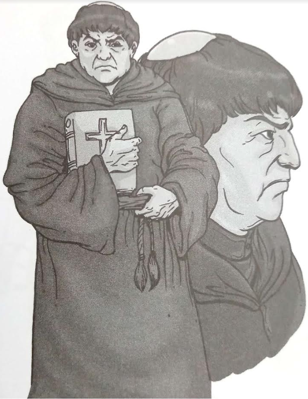

Padre Damaso
He is the main antagonist of Noli Me Tangere and a Francisian priest.
He is a very prideful, egotisitc and corrupt priest who had served for 20 years in San Diego but was moved to another town.
BACK TO HOMEPAGE